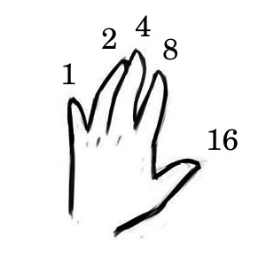
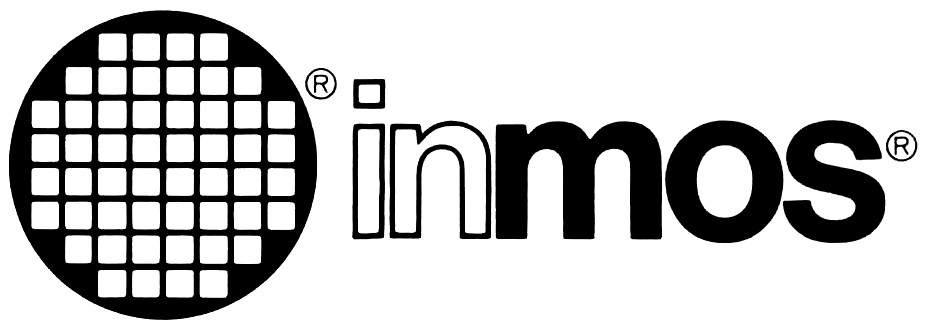
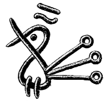

— Woe, make me your student
Devine Lu Linvega's journal
2023
17N
2023-07-12 Uxntal Presentation
I've done little else this week other than proof-reading Rek's Wiktopher manuscript, so I don't have much to write about right now.
We have had to negotiate rapids and convert the transit time from tide tables with Daylight Saving Time, which reminded me that I never made time to know when the time change occured in Canada. I am writing it down here so I can refer to it next autumn, it begins on the second Sunday of March at 2 a.m. and ends on the first Sunday in November at 2 a.m.


17M
2023-06-18 Princess Louisa
Ever since we sailed back to Canada, from Japan, friends have told us to make the trip through Jervis Inlet to Princess Louisa Inlet. After making our way there this week, and hiking up and down its cliffsides, I can confirm that it does indeed live up to its fame, it is absolutely breathtaking.
Having no connectivity has helped me focus on writing my talk for Strange Loop 2023, it's finally beginning to come into focus.
17L
2023-06-16 Context Inference
We're on our way north, anchored in Telegraph harbor. We've preserved enough food to get us through the summer, and stocked the shelves with books to last us as long. I was especially happy about finding a copy of Carroll's Sylvie & Bruno, and Golding's Lord Of The Flies, to carry along with us.
To continue my research on concatenative language inference, in contrast to the reassembler which creates an intelligible textual representation from a binary file and a symbols file; this time, I've written a reformatter that works from a textual source file and reindents it based on context. An interesting puzzle, considering how few syntaxic structures Uxntal has, lacking explicit notation for loops or even conditionals.
- Found a way to removed the page limit of 32kb for the wiki.
- By popular demand, the docs folder is now browsable.
- Enjoyed playing with Bellinitte's Pinhole renderer.

17K
2023-05-28 Road to Strange Loop
I've submitted a talk about permacomputing to Strange Loop 2023 and it has been accepted. This summer, as we sail north, I'll be collating my notes on the overlaps between permaculture and situated software design practices — And, hopefully, have a substantial presentation by September.
It's unbelieveable that we can sail up along the coast, find a pretty nook between two mountains that seems inviting, and just live there. When we'll have walked up and down the old trails to our heart's content, maybe we'll keep going. Part of me wonder for how long this will remain possible, it's just too good to last.

17J
2023-05-12 Type Inference
For a few weeks now, I've been sketching the basis for a type inference system for Uxntal. I first came across a stack-effect validator when writing Factor, and I've been meaning to make my own since after reading Rob Kleffner's talk notes. Prior to this project, I had a sense of what the different constructions were, but writing a type-checker drew clearer lines between all these different patterns.
We're casting off for Desolation Sound in a few days. Most afternoons are spent stocking up Pino with enough food to last us until we make our way back south next autumn. I'm eager to depart.

17I
2023-05-01 Concurrent All The Things
I recently watched David Ungar's Everything You Know About Parallel Programming Is Wrong talk, which lead me to read Tony Hoare's Communicating Sequential Processes, after which I felt inspired to consider parallel computing once more, and soon found myself taking a detour to play with the OCCAM programming language, and revisit threads in Uxn.
As a side-project, unrelated to threads, I made a pixel-perfect implementation of the classic Macintosh Note Pad application, so I could keep notes throughout the day and that turned out to be a fantastic aid to collecting passing thoughts. While building it, I also had a chance to implement text-wrapping in a project with very few moving parts and better understood how to handle text selection, where the boundary of a selection ends up being before the original anchor, and implemented it in Left.

17H
2023-04-22 Structured Editing
These past few months, I've explored playful things to do with programming that might not directly serve a purpose, or at least, one wouldn't come across them without seeking them out specifically, and I've collected some of those seemingly useless, ideas into a talk and submitted it to the Strange Loop conference happening in September.
Also, while I consider Beetbug to be a kind of disassembler, I wanted to see if I could build something that would let me go from a source file to an assembled rom, and back again. I figured that being able to recover a project from a rom and its symbols file has important potential in terms of data preservation. To make this possible, I modified the symbols file to include comments, and was able to complete the back and forth I wanted.
This allowed me to experiment with something called structured editing, in which you modifying the underlying structure, symbols and bytecode of a program, and not its structural representation.
17G
2023-04-05 Interaction Nets & Oquonie
The past two weeks have flown by, between finishing Oquonie and preparing Pino for the summer, each day I fall into bed completely exhausted. But the game is nearly finished now, there are fewer and fewer bugs, and most of my time is spent doing optimization.
I've been diving into Interaction Nets again, and I've fallen head over heels with Sato's Inpla language, the code is a nightmare but I feel that with a bit of work, and a better division between the interpreter and virtual machine, this could turn out to be something very fun.
After watching Alan Kay's OOPSLA 1997 talk, I went and read Smalltalk-80: Bits of History, Words of Advice and I've been fascinated with it. It goes in details about their approach to the implementations of the Smalltalk VM, and the challenges to getting the ST-80 image to boot on all these different platforms.
17F
2023-03-13 Residency at Biosonic
Spent the week at the LEÑA residency collaborating with audio-visual artists. They call it a retreat, but really, I returned from Galiano more exhausted than when I left. It was well worth it tho, as I rarely allow myself to play music for more than an hour or two at a time.
I've had a bit of time to kill between rehearsals, and whenever I had a few minutes to myself, I'd pour over the Lisp Machine memos. It occurred to me that the byol-type books really ought to teach about targetting Lisp architectures(or at the very least, something in the vein of SECD abstract machines), instead of implementing Lisp on top of imperative languages, which does a disservice to the entire exercise.

17E
2023-03-03 Preparing for Biosonic
I've been progressing on Oquonie, implementing sounds and making sure that it runs as smoothly as possible on as many different platforms as I can. This meant revisiting a lot of the implementation details. The month has flown by, but it has been a lot of fun learning about optimization.
I will be staying on Galiano for a week during the Biosonic residency, it has been a while since I've last slept on firm ground.

17D
2023-02-24 Oquonie is nearly ready
The weather has been absolute garbage and so has been a great help in advancing the Oquonie port. Not only is the project pushing Uxn further than it previously ventured, but it is equally pushing the tools used in its creation. The building of the game has had me do some significant improvements to Drifblim, Uxnlin, and Left.
17C
2023-02-07 Oquonie is happening!
After putting together a demo of what a Varvara implementation of Oquonie could look like, Rekka and I decided to officially port it. It's a lot of fun to revisit this little universe. I hope that we can bring the essence of the original into the redux version.
- Spared some time to fix a handful of issues in Orca.
- Spent nearly every waking moment working on the Oquonie prototype.
17B
2023-01-20 Function Stacks
I've been reading about reversible computing and put together a playground that allows me to experiment with the ideas of psi-lisp. This whole business of time reversible logic feels like visiting an old friend.
Meanwhile, I've also tried to bring potato to a usable state, which means that for it to entirely replace the current launcher, it should be able to assemble and run the assembled rom, a state to which I am inching closer.

17A
2023-01-08 Pino Rewiring
Since the turn of the year, we have spent every waking hour rewiring Pino, it has been a more challenging project than we had hoped but we will sleep soundly knowing that each connection has been well made.
I've read Koopman's Stack Machines: The New Wave and it inspired me to experiment with other virtual machine designs, namely that of the NOVIX NC4016. But after two weeks of experiments, I returned to writing Uxntal, partly because I do not feel limited in the realization of my ideas with my current stack, and partly because these sort of systems make for extremely obfuscated assembly languages. That being said, I can't seem to shake the craving to experiment with the Setun-70..
Previous years
Incoming: home blog